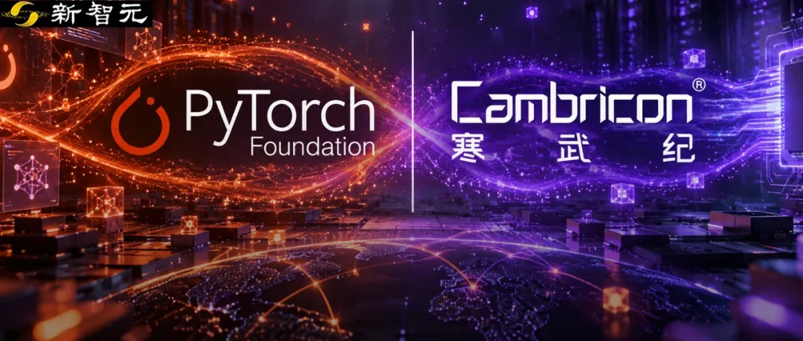
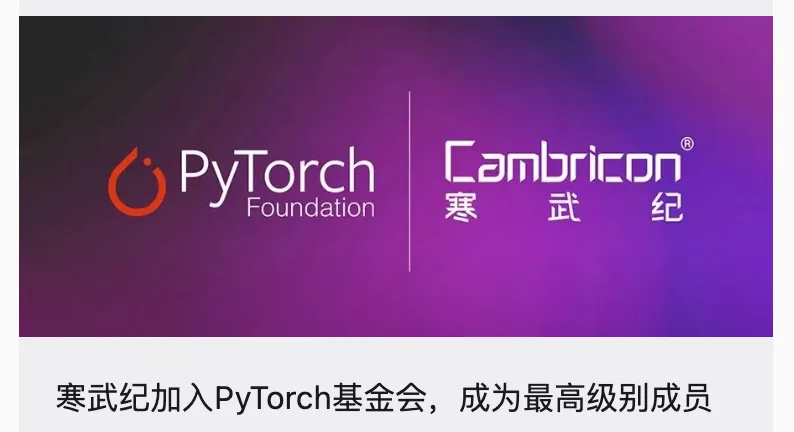
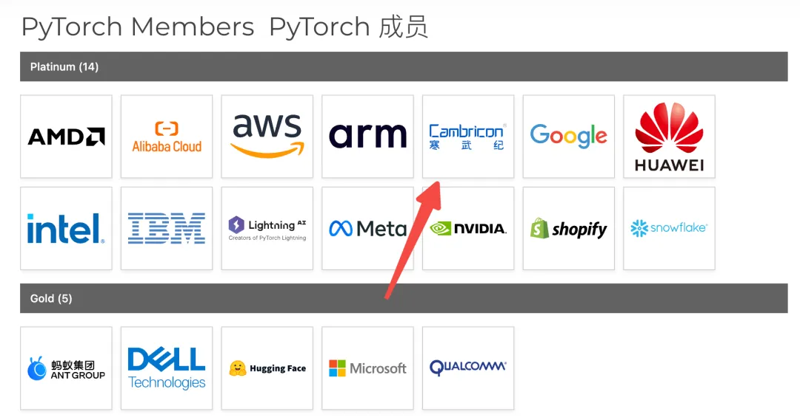
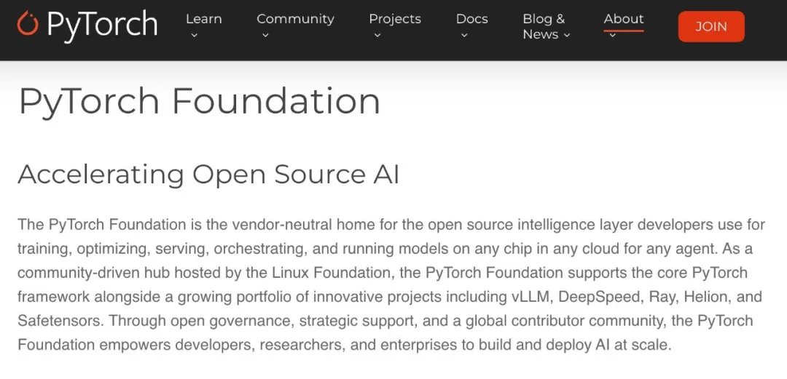

新智元报道
新智元报道

就在刚刚，寒武纪正式成为 PyTorch 基金会最高级别白金成员！

一家中国 AI 芯片公司，拿到了 PyTorch 基金会理事会的席位。
给全球 AI 开发框架定方向的那个房间里，多了一把中国椅子。
而且这把椅子，坐的是中国芯片厂商。

今年5月，阿里云刚成为PyTorch 基金会的白金成员。这次是寒武纪。
在全球 AI 芯片高度集中的格局下，一家中国芯片公司走进了全球最重要的 AI 开源社区的决策层。
这件事值得多看两眼。

很多人知道 PyTorch，但可能不了解 PyTorch 基金会。
PyTorch 基金会是 Linux 基金会旗下由社区驱动的开源 AI 组织，手里握着 PyTorch、vLLM、DeepSpeed、Ray 这一批项目。

GPT、DeepSeek、Qwen、GLM，名字各不相同，但往底下一层看，很多都站在同一套基础设施上：开发离不开 PyTorch，部署时则越来越多地跑在 vLLM 这样的推理引擎上。
截至2026年，PyTorch 社区已经聚集了来自2000多家机构的1.2万名贡献者。这套工具不是某一家公司的产品，它是整个 AI 行业的地基。
PyTorch 基金会的理事会，就是给这块地基画图纸的人。
理事会成员不讨论抽象的技术愿景。它决定 PyTorch 下一步优先支持谁，设备接口怎么抽象，哪些能力进主干，哪些留给厂商自己解决。
2022年基金会成立时，理事会的创始成员是清一色的全球巨头：Meta、AMD、AWS、Google Cloud、Microsoft、NVIDIA。
现在寒武纪拿到的白金席位，是同一级别的最高档。
谁坐在理事会里，谁就在替全球开发者回答一个特别具体的问题：换一块芯片，要不要把代码重写一遍？
这个问题，中国 AI 芯片已经被问了很多年。但过去很长一段时间里，回答这个问题的人里面，没有我们。

实话实说，中国 AI 芯片在全球开源生态中的角色，长期是「适配者」。
什么叫适配者？别人把框架写好，我们做兼容、补算子、调性能，尽量让开发者写好的老代码能在自家芯片上跑起来。
这活儿又苦又累又不显眼。框架那边升一个版本，下游就得跟一轮；自家硬件换一代，软件栈再来一轮。忙活到最后，换来的评价通常也就是两个字——
能用。
能用，但不好用。能跑，但跑起来费劲。
这是过去国产 AI 芯片在开发者心中的普遍印象。
而且你干得再好，也只是在别人画好的图纸上做施工。框架怎么设计、接口怎么定义、下一步优先支持谁——这些事都不归你管。
寒武纪选的是另一条走法。
它有个原则叫 Upstream First。翻成大白话就是：改动先提交回 PyTorch 的公共主干代码，不在自己的私有分支里偷偷留一份。
这条路慢得多。
给人家的主干提代码，要走社区评审，要被挑毛病，要和一堆不同硬件的诉求做妥协，一个补丁磨几个月是家常便饭。
相比之下，自己搞一个私有分支省事多了——改完就能用。但代价是 PyTorch 上游每动一下，你自己那份就得重新补一遍，永远慢半拍。
寒武纪选了那条难走的路。
这几年，寒武纪提交的代码覆盖了 PyTorch 的七个主干模块：torch 编译器（torch.compile）、Eager 模式算子、设备运行时、分布式计算、自动混合精度、数据加载器（Dataloader）和 Profiler 性能分析器。
简单说就是，模型怎么编译、数据怎么喂进去、混合精度怎么省显存、多卡之间怎么通信、性能卡在哪一步怎么排查。
不是「兼容」，是「共建」。区别在于，前者是在别人的代码上打补丁，后者是参与写代码本身。
与此同时，寒武纪在 vLLM 那条线也同步推进。
它和 vLLM 社区密切合作，把 DeepSeek-V4、GLM-5 这些主流开源大模型做到了 Day 0 适配——模型发布当天，就能在寒武纪的卡上跑起来。
对那些赶着发布产品的团队来说，这中间差的三个月，往往就是一个产品窗口的生死线。
一般来讲，公司加入一个基金会，派去的是商务或者高管。但这次寒武纪派不一样。
王进，寒武纪 AI 框架高级总监，代表寒武纪加入 PyTorch 基金会理事会。他带的团队专注于高效推理和大规模模型训练的软件支持，业务场景覆盖大语言模型、搜索广告与推荐、强化学习，客户在互联网和金融行业。
朱靖，寒武纪 PyTorch 的核心维护者，进入了基金会的技术咨询委员会（Technical Advisory Council）。他做的事离一线开发者更近——围绕 PyTorch 的后端集成机制 PrivateUse1，构建 Torch-MLU 扩展，让用户在寒武纪产品上拥有原生PyTorch 开发体验。
两个席位，一个在决策层，一个在技术层：寒武纪想要的不只是「被 PyTorch 支持」，它想参与决定 PyTorch 怎么支持所有人。
寒武纪软件工程副总裁 Elton Gong 表示：「统一的框架接口，对开发者来说是更低的迁移成本，也是更一致的工具和开发体验。对 PyTorch 来说，更通用的设备抽象意味着更少的下游分支，维护也更可持续。」
他说公司要做的不止是让寒武纪产品支持 PyTorch，还要通过持续的主干共建，推动 PyTorch 更好地支持多设备后端，「让 PyTorch 在更广泛的硬件平台上都能获得开箱即用的原生开发体验」。
这笔账才是硬件竞争的核心。
开发者换硬件，最怕代码要重写，工具链要重学，性能要重新调一遍。光是想想就头大。结果就是大家都不想换，都不敢换。
所以寒武纪往 PyTorch 主干交代码，本质上就是在帮这一层做得更统一，统一到换硬件就像换一台设备，而不是换一门语言。
PyTorch 基金会执行董事 Mark Collier 的表态也印证了这一点：「任何 AI 加速器要实现规模化应用并取得成功，都必须贯穿 AI 开发全生命周期——从用 PyTorch 构建和优化模型，到借助 vLLM 高效部署与服务。」
他提到寒武纪持续为上游社区贡献力量，也在推动 vLLM 在寒武纪硬件上的应用，欢迎它加入基金会。
寒武纪加入 PyTorch 基金会，不是一次简单的会员身份变化。
它是寒武纪从「国产 AI 芯片厂商」走向「全球主流 AI 软件生态参与者」的一个标志性节点。
寒武纪成立于2016年，做了十年芯片。这十年里，它的产品已经在智能对话、智能体 AI、搜索广告推荐和音视频生成这些场景里规模化商用。
而软件生态的建设——Upstream First、七个主干模块的贡献、Day 0 适配、两人进入理事会和技术咨询委员会，这些积累加在一起，让寒武纪拿到了一张入场券：不是去适配别人的规则，而是去参与制定规则。
往后寒武纪给自己划的重点是编译基础设施优化、CI/CD 能力提升，以及面向 PyTorch 领域专用库的跨设备支持。
回到更大的图景：中国 AI 芯片对全球开源社区的价值，正在从「我们也支持 PyTorch」变成「PyTorch 的多设备能力有我们的一份」。
中国 AI 芯片已经有人坐上了牌桌。
参考资料：https://mp.weixin.qq.com/s/ktALePb6BEXfvmsDgZCn9w
编辑：所罗门